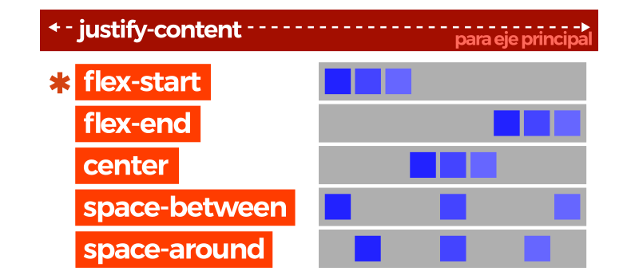

Maquetación y colocación¶
Tipos de elementos¶
Una de las partes más complejas de CSS, probablemente, sea la colocación y distribución de los elementos de una página. Sin embargo, suele ser difícil porque se desconocen los detalles particulares que componen CSS. Una vez se analiza y se comprenden los detalles, todo resulta más fácil.
Para comenzar, hay que saber que cada etiqueta HTML tiene un tipo de representación visual en un navegador, lo que habitualmente se suele denominar el tipo de caja. En principio, se parte de dos tipos básicos: inline y block.
| Valor | Denominación | Significado | Ejemplo |
|---|---|---|---|
| inline | Elemento en línea | El elemento se coloca en horizontal (un elemento a continuación del otro). | <span> |
| block | Elemento en bloque | El elemento se coloca en vertical (un elemento encima de otro). | <div> |
Obsérvese que por defecto, todos los elementos <div> son elementos de bloque (block) y todos los elementos <span> son elementos en línea (inline). Para entender esto facilmente, vamos a crear un HTML con 3 etiquetas <div> como las siguientes:
<div>Elemento 1</div>
<div>Elemento 2</div>
<div>Elemento 3</div>
A estas etiquetas HTML le vamos a aplicar el siguiente código CSS:
div {
background: blue;
color: white;
margin: 1px;
}
Con esto observaremos que en nuestro navegador nos aparecen 3 cajas azules colocadas en vertical (una debajo de otra) que cubren todo el ancho disponible de la página. Esto ocurre porque la etiqueta <div> es un elemento en bloque, o lo que es lo mismo, que tiene un tipo de representación block por defecto. Cada etiqueta HTML tiene un tipo de representación concreta.
Sin embargo, este comportamiento de elementos puede cambiarse con la propiedad CSS display. Tan sencillo como añadir display: inline en el ejemplo anterior y veremos como pasan a ser 3 cajas azules colocadas en horizontal (una al lado de la otra) que cubren sólo el ancho del contenido de cada una. Ahora los <div> de esa página son elementos en línea (el tipo de representación visual que tienen los <span>).
Otros tipos de elementos¶
A medida que vamos cambiando el tipo de representación de estos elementos, nos damos cuenta que es insuficiente para realizar tareas y vamos necesitando más tipos de caja.
Vamos a rellenar un poco más la tabla, con las características más importantes de las opciones que puede tomar la propiedad CSS display:
| Tipo de caja | Características |
|---|---|
| block | Se apila en vertical. Ocupa todo el ancho disponible de su etiqueta contenedora. |
| inline | Se coloca en horizontal. Se adapta al ancho de su contenido. Ignora width o height. |
| inline-block | Combinación de los dos anteriores. Se comporta como inline pero no ignora width o height. |
| flex | Utiliza el modelo de cajas flexibles Flexbox. Muy útil para diseños adaptables. |
| inline-flex | La versión en línea (ocupa sólo su contenido) del modelo de cajas flexibles flexbox. |
| grid | Utiliza cuadrículas o rejillas con el modelo de cajas Grid CSS. |
| inline-grid | La versión en línea (ocupa sólo su contenido) del modelo de cajas grid css. |
| list-item | Actúa como un ítem de una lista. Es el comportamiento de etiquetas como <li>. |
| table | Actúa como una tabla. Es el comportamiento de etiquetas como <table>. |
| table-cell | Actúa como la celda de una tabla. Es el comportamiento de etiquetas como <th> o <td>. |
| table-row | Actúa como la fila de una tabla. Es el comportamiento de etiquetas como <tr>. |
Ocultar elementos¶
En la lista anterior, falta un valor de la propiedad display. Mediante la mencionada propiedad, es posible aplicar un valor none y ocultar completamente elementos que no queramos que se muestren, los cuales desaparecen por completo. Es muy útil para hacer desaparecer información cuando el usuario realiza alguna acción, por ejemplo.
| Tipo de caja | Características |
|---|---|
| none | Hace desaparecer visualmente el elemento, como si no existiera. |
No obstante, también existe una propiedad CSS llamada visibility que realiza la misma acción, con la ligera diferencia de que no sólo oculta el elemento, sino que además mantiene un vacío con el mismo tamaño de lo que antes estaba ahí.
Dicha propiedad visibility tiene los siguientes valores posibles:
| Valor | Significado |
|---|---|
| visible | El elemento es visible. Valor por defecto. |
| hidden | El elemento no es visible pero sigue ocupando su espacio y posición. |
| collapse | Sólo para tablas. El elemento se contrae para no ocupar espacio. |
Utilizar visibility:hidden es muy interesante si queremos que un elemento y su contenido se vuelva invisible, pero siga ocupando su espacio y así evitar que los elementos adyacentes se desplacen, lo que suele ser un comportamiento no deseado en algunas ocasiones cuando se aplica display: none.
Otra opción interesante es utilizar la propiedad opacity junto a transiciones o animaciones, desplazarse desde el valor 0 al 1 o viceversa. De esta forma conseguimos una animación de aparición o desvanecimiento.
Posicionamiento¶
A grandes rasgos, y como aprendimos en temas anteriores, si tenemos varios elementos en línea (uno detrás de otro) aparecerán colocados de izquierda hacia derecha, mientras que si son elementos en bloque se verán colocados desde arriba hacia abajo. Estos elementos se pueden ir combinando y anidando (incluyendo unos dentro de otros), construyendo así esquemas más complejos.
Hasta ahora, hemos estado trabajando sin saberlo en lo que se denomina posicionamiento estático (static), donde todos los elementos aparecen con un orden natural según donde estén colocados en el HTML. Este es el modo por defecto en que un navegador renderiza una página.
Sin embargo, existen otros modos alternativos de posicionamiento, que podemos cambiar mediante la propiedad position, que nos pueden interesar para modificar la posición en donde aparecen los diferentes elementos y su contenido.
A la propiedad position se le pueden indicar los siguientes valores:
| Valor | Significado |
|---|---|
| static | Posicionamiento estático. Utiliza el orden natural de los elementos HTML. |
| relative | Posicionamiento relativo. Los elementos se mueven ligeramente en base a su posición estática. |
| absolute | Posicionamiento absoluto. Los elementos se colocan en base al contenedor padre. |
| fixed | Posicionamiento fijo. Idem al absoluto, pero aunque hagamos scroll no se mueve. |
Si utilizamos un modo de posicionamiento diferente al estático (absolute, fixed o relative), podemos utilizar una serie de propiedades para modificar la posición de un elemento. Estas propiedades son las siguientes:
| Propiedad | Valor | Significado |
|---|---|---|
| top: | auto | |
| bottom: | auto | |
| left: | auto | |
| right: | auto | |
| z-index: | auto |
Antes de pasar a explicar los tipos de posicionamiento, debemos tener claras las propiedades top, bottom, left y right, que sirven para mover un elemento desde la orientación que su propio nombre indica hasta su extremo contrario. Esto es, si utilizamos left e indicamos 20px, estaremos indicando mover desde la izquierda 20 píxeles hacia la derecha.
Pero pasemos a ver cada tipo de posicionamiento por separado y su comportamiento:
Posicionamiento relativo¶
Si utilizamos la palabra clave relative activaremos el modo de posicionamiento relativo, que es el más sencillo de todos. En este modo, los elementos se colocan exactamente igual que en el posicionamiento estático (permanecen en la misma posición), pero dependiendo del valor de las propiedades top, bottom, left o right variaremos ligeramente la posición del elemento.
Ejemplo: Si establecemos
left:40px, el elemento se colocará 40 píxeles a la derecha desde la izquierda donde estaba colocado en principio, mientras que si especificamosright:40px, el elemento se colocará 40 píxeles a la izquierda desde la derecha donde estaba colocado en principio.
Posicionamiento absoluto¶
Si utilizamos la palabra clave absolute estamos indicando que el elemento pasará a utilizar posicionamiento absoluto, que no es más que utilizar el documento completo como referencia. Esto no es exactamente el funcionamiento de este modo de posicionamiento, pero nos servirá como primer punto de partida para entenderlo.
Ejemplo: Si establecemos
left:40px, el elemento se colocará 40 píxeles a la derecha del extremo izquierdo de la página. Sin embargo, si indicamosright:40px, el elemento se colocará 40 píxeles a la izquierda del extremo derecho de la página.
Como mencionaba anteriormente, aunque este es el funcionamiento del posicionamiento absoluto, hay algunos detalles más complejos en su modo de trabajar. Realmente, este tipo de posicionamiento coloca los elementos utilizando como punto de origen el primer contenedor con posicionamiento diferente a estático.
Por ejemplo, si el contenedor padre tiene posicionamiento estático, pasamos a mirar el posicionamiento del padre del contenedor padre, y así sucesivamente hasta encontrar un contenedor con posicionamiento no estático o llegar a la etiqueta <body>, en el caso que se comportaría como el ejemplo anterior.
Posicionamiento fijo¶
Por último, el posicionamiento fijo es hermano del posicionamiento absoluto. Funciona exactamente igual, salvo que hace que el elemento se muestre en una posición fija dependiendo de la región visual del navegador. Es decir, aunque el usuario haga scroll y se desplace hacia abajo en la página web, el elemento seguirá en el mismo sitio posicionado.
Ejemplo: Si establecemos
top:0yright:0, el elemento se colocará justo en la esquina superior derecha y se mantendrá ahí aunque hagamos scroll hacia abajo en la página.
Otros posicionamientos¶
Existen otros valores de position como sticky, page o center, sin embargo, su soporte e implementación aún es muy temprana y no se sabe si su funcionalidad terminará ofreciéndose desde los diferentes navegadores.
Profundidad (niveles)¶
Es interesante conocer también la existencia de la propiedad z-index, que establece el nivel de profundidad en el que está un elemento sobre los demás. De esta forma, podemos hacer que un elemento se coloque encima o debajo de otro.
Su funcionamiento es muy sencillo, sólo hay que indicar un número que representará el nivel de profundidad del elemento. Los elementos un número más alto estarán por encima de otros con un número más bajo, que permanecerán ocultos detrás de los primeros.
Nota: Los niveles
z-index, así como las propiedadestop,left,bottomyrightno funcionan con elementos que estén utilizando posicionamiento estático. Deben tener un tipo de posicionamiento diferente a estático.
Desplazamientos¶
Es posible que en algún momento necesitemos algo más de control sobre nuestra página y realizar cambios en determinados elementos. Existe una propiedad denominada float que tiene un funcionamiento peculiar con el que cambiamos el flujo de ordenación de elementos.
Con float podemos conseguir que un elemento <
| Propiedad | Valor | Significado |
|---|---|---|
float |
none | left |
clear |
none | left |
Elementos flotantes¶
Con la propiedad float puedes conseguir que los elementos que quieras, alteren su comportamiento y floten a la izquierda (left) o a la derecha (right). Con el valor none (valor por defecto) eliminas esta característica de desplazamiento.
Imaginemos que tenemos un párrafo de texto, seguido de una lista, seguida de otro párrafo de texto:
ul {
background: grey;
}
li {
background: blue;
width: 100px;
padding: 8px;
margin: 8px;
color: white;
}
ul, li {
float: left;
}
Con esto conseguimos que los ítems de la lista floten uno a continuación de otro. No obstante, para conseguir este comportamiento siempre recomiendo utilizar display en lugar de float. Cambiando la representación de elementos se suele conseguir una solución más limpia y organizada.
Limpiar flujo flotante¶
Por otro lado, la propiedad clear se encarga de impedir elementos flotantes en la zona indicada, a la izquierda del elemento (left), a la derecha (right) o en ambos lados (both).
En el ejemplo anterior, el segundo párrafo de texto aparecería a continuación de la lista, cuando probablemente, nuestra intención es que apareciera en la parte inferior. Se podría solucionar simplemente añadiendo el siguiente texto:
p {
clear:both
}
OJO: La propiedad
floates una propiedad que podría ser interesante en determinadas condiciones, sin embargo, el código resultante suele ser más sucio y complejo de lo que sería mediante otros métodos actuales, por lo que se recomienda sólo utilizarlo por razones de retrocompatibilidad y darle preferencia a métodos como Flexbox o Grid CSS.
Flexbox CSS¶
Tradicionalmente, en CSS se ha utilizado el posicionamiento (static, relative, absolute...), los elementos en línea o en bloque (y derivados) o los float, lo que a grandes rasgos no dejaba de ser un sistema de creación de diseños bastante tradicional que no encaja con los retos que tenemos hoy en día: sistemas de escritorio, dispositivos móviles, múltiples resoluciones, etc...
Flexbox es un sistema de elementos flexibles que llega con la idea de olvidar estos mecanismos y acostumbrarnos a una mecánica más potente, limpia y personalizable, en la que los elementos HTML se adaptan y colocan automáticamente y es más fácil personalizar los diseños. Está especialmente diseñado para crear, mediante CSS, estructuras de una sóla dimensión.
Conceptos¶
Para empezar a utilizar flexbox lo primero que debemos hacer es conocer algunos de los elementos básicos de este nuevo esquema, que son los siguientes:

* Contenedor: Existe un elemento padre que es el contenedor que tendrá en su interior cada uno de los ítems flexibles y adaptables.
- Eje principal: Los contenedores flexibles tendrán una orientación principal específica. Por defecto, es en horizontal (fila).
- Eje secundario: De la misma forma, los contenedores flexibles tendrán una orientación secundaria, perpendicular a la principal. Si la principal es en horizontal, la secundaria será en vertical, y viceversa. * Ítem: Cada uno de los hijos flexibles que tendrá el contenedor en su interior.
Imaginemos el siguiente escenario:
<div id="contenedor"> <!-- contenedor flex -->
<div class="item item-1">1</div> <!-- cada uno de los ítems flexibles -->
<div class="item item-2">2</div>
<div class="item item-3">3</div>
</div>
Para activar el modo flexbox hay que utilizar sobre el elemento contenedor la propiedad display que vimos en un capítulo previo, y especificar el valor flex o inline-flex dependiendo de como queramos que se comporte el contenedor: si como un elemento en línea, o como un elemento en bloque.
| Tipo de elemento | Descripción |
|---|---|
| inline-flex | Establece un contenedor de ítems flexible en línea, de forma equivalente a inline-block. |
| flex | Establece un contenedor de ítems flexible en bloque, de forma equivalente a block. |
Por defecto, y sólo con esto, observaremos que los elementos se disponen todos sobre una misma línea. Esto ocurre porque estamos utilizando el modo flexbox y estaremos trabajando con ítems flexibles básicos, garantizando que no se desbordarán ni mostrarán los problemas que, por ejemplo, tienen los porcentajes sobre elementos que no utilizan flexbox.
Dirección de los ejes¶
Existen dos propiedades principales para manipular la dirección y comportamiento de los ítems a lo largo del eje principal del contenedor. Son las siguientes:
| Propiedad | Valor | Significado |
|---|---|---|
flex-direction |
row | row-reverse |
flex-wrap |
nowrap | wrap |
Mediante la propiedad flex-direction podemos modificar la dirección del eje principal del contenedor para que se oriente en horizontal (por defecto) o en vertical. Además, también podemos incluir el sufijo -reverse para indicar que coloque los ítems en orden inverso.
| Valor | Descripción |
|---|---|
| row | Establece la dirección del eje principal en horizontal. |
| row-reverse | Establece la dirección del eje principal en horizontal (invertido). |
| column | Establece la dirección del eje principal en vertical. |
| column-reverse | Establece la dirección del eje principal en vertical (invertido). |
Esto nos permite tener un control muy alto sobre el orden de los elementos en una página. Veamos la aplicación de estas propiedades sobre el ejemplo anterior, para modificar el flujo del eje principal del contenedor:
#contenedor {
background: #CCC;
display: flex;
flex-direction: column;
}
.item {
background: #777;
}
Por otro lado, existe otra propiedad llamada flex-wrap con la que podemos especificar el comportamiento del contenedor respecto a evitar que se desborde (nowrap, valor por defecto) o permitir que lo haga, en cuyo caso, estaríamos hablando de un contenedor flexbox multilinea.
| Valor | Descripción |
|---|---|
| nowrap | Establece los ítems en una sola línea (no permite que se desborde el contenedor). |
| wrap | Establece los ítems en modo multilínea (permite que se desborde el contenedor). |
| wrap-reverse | Establece los ítems en modo multilínea, pero en dirección inversa. |
Teniendo en cuenta estos valores de la propiedad flex-wrap, podemos conseguir cosas como la siguiente:
#contenedor {
background: #CCC;
display: flex;
width: 200px;
flex-wrap: wrap; /* Comportamiento por defecto: nowrap */
}
.item {
background: #777;
width: 50%;
}
En el caso de especificar nowrap (u omitir la propiedad flex-wrap) en el contenedor, los 3 ítems se mostrarían en una misma línea del contenedor. En ese caso, cada ítem debería tener un 50% de ancho (o sea, 100px de los 200px del contenedor). Un tamaño de 100px por ítem, sumaría un total de 300px, que no cabrían en el contenedor de 200px, por lo que flexbox reajusta los ítems flexibles para que quepan todos en la misma línea, manteniendo las mismas proporciones.
Sin embargo, si especificamos wrap en la propiedad flex-wrap, lo que permitimos es que el contenedor se pueda desbordar, pasando a ser un contenedor multilínea, que mostraría el ítem 1 y 2 en la primera linea (con un tamaño de 100px cada uno) y el ítem 3 en la línea siguiente, dejando un espacio libre para un posible ítem 4.
Atajo: Dirección de los ejes¶
Recuerda que existe una propiedad de atajo (short-hand) llamada flex-flow, con la que podemos resumir los valores de las propiedades flex-direction y flex-wrap, especificándolas en una sola propiedad y ahorrándonos utilizar las propiedades concretas:
#contenedor {
/* flex-flow: <flex-direction> <flex-wrap>; */
flex-flow: row wrap;
}
Propiedades de alineación¶
Ahora que tenemos un control básico del contenedor de estos ítems flexibles, necesitamos conocer las propiedades existentes dentro de flexbox para disponer los ítems dependiendo de nuestro objetivo. Vamos a echar un vistazo a cuatro propiedades interesantes para ello:
| Propiedad | Valor | Actúa sobre |
|---|---|---|
justify-content |
flex-start | flex-end |
align-content |
flex-start | flex-end |
align-items |
flex-start | flex-end |
align-self |
auto | flex-start |
De esta pequeña lista, hay que centrarse en primer lugar en la primera y la tercera propiedad, que son las más importantes (las otras dos son casos particulares que explicaremos más adelante):
justify-content: Se utiliza para alinear los ítems del eje principal (por defecto, el horizontal).align-items: Usada para alinear los ítems del eje secundario (por defecto, el vertical).
Sobre el eje principal¶
La primera propiedad, justify-content, sirve para colocar los ítems de un contenedor mediante una disposición concreta a lo largo del eje principal:
| Valor | Descripción |
|---|---|
| flex-start | Agrupa los ítems al principio del eje principal. |
| flex-end | Agrupa los ítems al final del eje principal. |
| center | Agrupa los ítems al centro del eje principal. |
| space-between | Distribuye los ítems dejando (el mismo) espacio entre ellos. |
| space-around | Distribuye los ítems dejando (el mismo) espacio a ambos lados de cada uno de ellos. |
Con cada uno de estos valores, modificaremos la disposición de los ítems del contenedor donde se aplica, pasando a colocarse como se ve en la imagen siguiente (nótense las diferentes tonalidades azules para indicar las posiciones de cada ítem):

Una vez entendido este caso, debemos atender a la propiedad align-content, que es un caso particular del anterior. Nos servirá cuando estemos tratando con un contenedor flex multilinea, que es un contenedor en el que los ítems no caben en el ancho disponible, y por lo tanto, el eje principal se divide en múltiples líneas.
De esta forma, align-content servirá para alinear cada una de las líneas del contenedor multilinea. Los valores que puede tomar son los siguientes:
| Valor | Descripción |
|---|---|
| flex-start | Agrupa los ítems al principio del eje principal. |
| flex-end | Agrupa los ítems al final del eje principal. |
| center | Agrupa los ítems al centro del eje principal. |
| space-between | Distribuye los ítems desde el inicio hasta el final. |
| space-around | Distribuye los ítems dejando el mismo espacio a los lados de cada uno. |
| stretch | Estira los ítems para ocupar de forma equitativa todo el espacio. |
Con estos valores, vemos como cambiamos la disposición en vertical (porque partimos de un ejemplo en el que estamos utilizando flex-direction: row, y el eje principal es horizontal) de los ítems que están dentro de un contenedor multilinea.

En el ejemplo siguiente, veremos que al indicar un contenedor de 200 píxels de alto con ítems de 50px de alto y un flex-wrap establecido para tener contenedores multilinea, podemos utilizar la propiedad align-content para alinear los ítems de forma vertical de modo que se queden en la zona inferior del contenedor:
#contenedor {
background: #CCC;
display: flex;
width: 200px;
height: 200px;
flex-wrap: wrap;
align-content: flex-end;
}
.item {
background: #777;
width: 50%;
height: 50px;
}
Sobre el eje secundario¶
La otra propiedad importante de este apartado es align-items, que se encarga de alinear los ítems en el eje secundario del contenedor. Hay que tener cuidado de no confundir align-content con align-items, puesto que el primero actúa sobre cada una de las líneas de un contenedor multilinea (no tiene efecto sobre contenedores de una sola línea), mientras que align-items lo hace sobre la línea actual. Los valores que puede tomar son los siguientes:
| Valor | Descripción |
|---|---|
| flex-start | Alinea los ítems al principio del eje secundario. |
| flex-end | Alinea los ítems al final del eje secundario. |
| center | Alinea los ítems al centro del eje secundario. |
| stretch | Alinea los ítems estirándolos de modo que cubran desde el inicio hasta el final del contenedor. |
| baseline | Alinea los ítems en el contenedor según la base del contenido de los ítems del contenedor. |
Por otro lado, la propiedad align-self actúa exactamente igual que align-items, sin embargo es la primera propiedad de flexbox que vemos que se utiliza sobre un ítem hijo específico y no sobre el elemento contenedor. Salvo por este detalle, funciona exactamente igual que align-items.

Gracias a ese detalle, align-self nos permite cambiar el comportamiento de align-items y sobreescribirlo con comportamientos específicos para ítems concretos que no queremos que se comporten igual que el resto. La propiedad puede tomar los siguientes valores:
| Valor | Descripción |
|---|---|
| flex-start | Alinea los ítems al principio del contenedor. |
| flex-end | Alinea los ítems al final del contenedor. |
| center | Alinea los ítems al centro del contenedor. |
| stretch | Alinea los ítems estirándolos al tamaño del contenedor. |
| baseline | Alinea los ítems en el contenedor según la base de los ítems. |
| auto | Hereda el valor de align-items del padre (o si no lo tiene, stretch). |
Si se especifica el valor auto a la propiedad align-self, el navegador le asigna el valor de la propiedad align-items del contenedor padre, y en caso de no existir, el valor por defecto: stretch.
Atajo: Alineaciones¶
Existe una propiedad de atajo con la que se pueden establecer los valores de align-content y de justify-content de una sola vez, denominada place-content:
#contenedor {
display: flex;
place-content: flex-start flex-end;
/* Equivalente a... */
align-content: flex-start;
justify-content: flex-end;
}
Propiedades de hijos¶
A excepción de la propiedad align-self, todas las propiedades que hemos visto hasta ahora se aplican sobre el elemento contenedor. Las siguientes propiedades, sin embargo, se aplican sobre los ítems hijos. Echemos un vistazo:
| Propiedad | Valor | Descripción |
|---|---|---|
flex-grow |
0 | |
flex-shrink |
1 | |
flex-basis |
content | |
order |
0 |
En primer lugar, tenemos la propiedad flex-grow para indicar el factor de crecimiento de los ítems en el caso de que no tengan un ancho específico. Por ejemplo, si con flex-grow indicamos un valor de 1 a todos sus ítems, tendrían el mismo tamaño cada uno de ellos. Pero si colocamos un valor de 1 a todos los elementos, salvo a uno de ellos, que le indicamos 2, ese ítem será más grande que los anteriores. Los ítems a los que no se le especifique ningún valor, tendrán por defecto valor de 0.
En segundo lugar, tenemos la propiedad flex-shrink que es la opuesta a flex-grow. Mientras que la anterior indica un factor de crecimiento, flex-shrink hace justo lo contrario, aplica un factor de decrecimiento. De esta forma, los ítems que tengan un valor numérico más grande, serán más pequeños, mientras que los que tengan un valor numérico más pequeño serán más grandes, justo al contrario de como funciona la propiedad flex-grow.
Por último, tenemos la propiedad flex-basis, que define el tamaño por defecto (de base) que tendrán los ítems antes de aplicarle la distribución de espacio. Generalmente, se aplica un tamaño (unidades, porcentajes, etc...), pero también se puede aplicar la palabra clave content que ajusta automáticamente el tamaño al contenido del ítem, que es su valor por defecto.
Atajo: Propiedades de hijos¶
Existe una propiedad llamada flex que sirve de atajo para estas tres propiedades de los ítems hijos. Funciona de la siguiente forma:
.item {
/* flex: <flex-grow> <flex-shrink> <flex-basis> */
flex: 1 3 35%;
}
Huecos (gaps)¶
Existen dos propiedades de flexbox que han surgido recientemente: row-gap y column-gap. Dichas propiedades, permiten establecer el tamaño de un <padding o margin en los elementos hijos.
| Propiedad | Valor | Descripción |
|---|---|---|
row-gap |
normal | |
column-gap |
normal |
Ten en cuenta que sólo una de las dos propiedades tendrá efecto, dependiendo de si la propiedad flex-direction está establecida en column o en row. Eso sí, es posible usar ambas si tenemos la propiedad flex-wrap definida a wrap y, por lo tanto, disponemos de multicolumnas flexbox.
Atajo: Huecos¶
En el caso de que queramos utilizar una propiedad de atajo para los huecos, podemos utilizar la propiedad gap. Eso sí, ten en cuenta que estas propiedades de huecos en flexbox, aún no tienen un soporte demasiado extendido entre navegadores:
#contenedor {
/* gap: <row> <column> */
gap: 4px 8px;
/* 1 parámetro: usa el mismo para ambos */
gap: 4px;
}
Orden de los ítems¶
Por último, y quizás una de las propiedades más interesantes, es order, que modificar y establece el orden de los ítems según una secuencia numérica.
Por defecto, todos los ítems flex tienen un order: 0 implícito, aunque no se especifique. Si indicamos un order con un valor numérico, irá recolocando los ítems según su número, colocando antes los ítems con número más pequeño (incluso valores negativos) y después los ítems con números más altos.
De esta forma podemos recolocar fácilmente los ítems incluso utilizando media queries o responsive design.
Grid CSS (Cuadrículas)¶
Uno de los procesos más problematicos y frustrantes de CSS, sobre todo para novatos o principiantes, es el proceso de colocar y distribuir los elementos a lo largo de una página. Mecanismos como posicionamiento, floats o elementos en bloque o en línea, suelen ser insuficientes (o muy complejos) para crear un layout o estructuras para páginas web actuales.
El sistema flexbox es una gran mejora, sin embargo, está orientado a estructuras de una sola dimensión, por lo que aún necesitamos algo más potente para estructuras web más específicas o complejas. Con el paso del tiempo, muchos frameworks y librerías utilizan un sistema grid donde definen una cuadrícula determinada, y modificando los nombres de las clases de los elementos HTML, podemos darle tamaño, posición o colocación.

Grid CSS nace de esa necesidad, y recoge las ventajas de ese sistema, añadiendole numerosas mejoras y características que permiten crear rápidamente cuadrículas sencillas y potentes de forma prácticamente instantánea.
Conceptos¶
Antes de comenzar con Grid CSS, quizás sería conveniente dominar el sistema Flexbox, ya que Grid toma la filosofía y bases de él. Para utilizar Grid CSS necesitaremos tener en cuenta una serie de conceptos que utilizaremos a partir de ahora y que definiremos a continuación:

- Contenedor: El elemento padre contenedor que definirá la cuadrícula o rejilla.
- Ítem: Cada uno de los hijos que contiene la cuadrícula (elemento contenedor).
- Celda (grid cell): Cada uno de los cuadritos (unidad mínima) de la cuadrícula.
- Area (grid area): Región o conjunto de celdas de la cuadrícula.
- Banda (grid track): Banda horizontal o vertical de celdas de la cuadrícula.
- Línea (grid line): Separador horizontal o vertical de las celdas de la cuadrícula.
Para utilizar cuadriculas Grid CSS, trabajaremos bajo el siguiente escenario:
<div class="grid"> <!-- contenedor -->
<div class="a">Item 1</div> <!-- cada uno de los ítems del grid -->
<div class="b">Item 2</div>
<div class="c">Item 3</div>
<div class="d">Item 4</div>
</div>
Para activar la cuadrícula grid hay que utilizar sobre el elemento contenedor la propiedad display y especificar el valor grid o inline-grid. Este valor influye en como se comportará la cuadrícula con el contenido exterior. El primero de ellos permite que la cuadrícula aparezca encima/debajo del contenido exterior (en bloque) y el segundo de ellos permite que la cuadrícula aparezca a la izquierda/derecha (en línea) del contenido exterior.
| Tipo de elemento | Descripción |
|---|---|
| inline-grid | Establece una cuadrícula con ítems en línea, de forma equivalente a inline-block. |
| grid | Establece una cuadrícula con ítems en bloque, de forma equivalente a block. |
Una vez elegido uno de estos dos valores, y establecida la propiedad display al elemento contenedor, hay varias formas de configurar nuestra cuadrícula grid. Comencemos con las propiedades que se aplican al elemento contenedor (padre).
Grid con filas y columnas¶
Es posible crear cuadrículas con un tamaño explícito. Para ello, sólo tenemos que usar las propiedades CSS grid-template-columns y grid-template-rows, que sirven para indicar las dimensiones de cada celda de la cuadrícula, diferenciando entre columnas y filas. Las propiedades son las siguientes:
| Propiedad | Valor | Descripción |
|---|---|---|
grid-template-columns |
[c1] [c2] ... | Establece el de cada columna (col 1, col 2...). |
grid-template-rows |
[f1] [f2] ... | Establece el de cada fila (fila 1, fila 2...). |
Conociendo estas dos propiedades, asumamos el siguiente código CSS:
.grid {
display: grid;
grid-template-columns: 50px 300px;
grid-template-rows: 200px 75px;
}
Esto significa que tendremos una cuadricula con 2 columnas (la primera con 50px de ancho y la segunda con 300px de ancho) y con 2 filas (la primera con 200px de alto y la segunda con 75px de alto). Ahora, dependiendo del número de ítems (elementos hijos) que tenga el contenedor grid, tendremos una cuadrícula de 2x2 elementos (4 ítems), 2x3 elementos (6 ítems), 2x4 elementos (8 ítems) y así sucesivamente. Si el número de ítems es impar, la última celda de la cuadrícula se quedará vacía.

Unidad fracción restante (fr)¶
En el ejemplo anterior he utilizado píxels como unidades de las celdas de la cuadrícula, sin embargo, también podemos utilizar otras unidades (o incluso combinarlas) como porcentajes, la palabra clave auto (que obtiene el tamaño restante) o la unidad especial de Grid CSS fr (fraction), que simboliza una fracción de espacio restante en el grid. Veamos un código de ejemplo en acción:
.grid {
display: grid;
grid-template-columns: 1fr 1fr;
grid-template-rows: 2fr 1fr;
}
Este nuevo ejemplo, se crea una cuadrícula de 2x2, donde el tamaño de ancho de la cuadrícula se divide en dos columnas (mismo tamaño de ancho para cada una), y el tamaño de alto de la cuadrícula se divide en dos filas, donde la primera ocupará el doble (2 fr) que la segunda (1 fr):

De esta forma, podemos tener un mejor control del espacio restante de la cuadrícula, y como utilizarlo.
Nota: Se pueden combinar varias unidades diferentes, pudiendo utilizar píxeles (px) y fracciones restantes (fr), porcentajes (%) y fracciones restantes (fr) o combinaciónes similares.
Filas y columnas repetitivas¶
En algunos casos, en las propiedades grid-template-columns y grid-template-rows podemos necesitar indicar las mismas cantidades un número alto de veces, resultando repetitivo y molesto. Se puede utilizar la expresión repeat() para indicar repetición de valores, indicando el número de veces que se repiten y el tamaño en cuestión.
La expresión a utilizar sería la siguiente: repeat([núm de veces], [valor o valores]):
.grid {
display: grid;
grid-template-columns: 100px repeat(2, 50px) 200px;
grid-template-rows: repeat(2, 50px 100px);
}
Asumiendo que tuvieramos un contenedor grid con 8 ítems hijos (o más), el ejemplo anterior crearía una cuadrícula con 4 columnas (la primera de 100px de ancho, la segunda y tercera de 50px de ancho y la cuarta de 200px de ancho). Por otro lado, tendría 2 filas (la primera de 50px de alto, y la segunda de 100px de alto). En el caso de tener más ítems hijos, el patrón se seguiría repitiendo.
El ejemplo anterior sería equivalente al código CSS siguiente:
.grid {
display: grid;
grid-template-columns: 100px 50px 50px 200px;
grid-template-rows: 50px 100px 50px 100px;;
}
Grid con líneas nombradas¶
Con Grid CSS también tenemos la posibilidad de usar << linenames>>, o lo que es lo mismo, ponerle nombre a las líneas de nuestro sistema grid. Vamos a verlo con un ejemplo, donde probablemente se vea mucho mejor. Partamos de esta estructura HTML:
<div class="grid">
<div class="header">Header</div>
<div class="sidebar">Sidebar</div>
<div class="content">Content</div>
<div class="footer">Footer</div>
</div>
Los nombres de las clases ya dan una idea del contenido que tendrán. Ahora, mediante Grid CSS lo que haremos es darle una estructura definida. Para ello, vamos a considerar los siguientes nombres para las lineas de nuestro grid, utilizando X para las posiciones en el eje X y utilizando Y para las posiciones en el eje Y:

Teniendo esto en cuenta, lo único que tenemos que hacer es indicar estos nombres entre corchetes, justo antes de la medida que establecimos como vimos en apartados anteriores. Obsérvese que también se coloca una nombre de línea final sin medida a continuación, que representa la línea final:
.grid {
display: grid;
grid-template-columns: [x0] 1fr [x1] 1fr [x2] 1fr [x3];
grid-template-rows: [y0] 1fr [y1] 1fr [y2] 1fr [y3];
}
En este caso, los nombres utilizados son tan sólo un ejemplo didáctico. Si se considera más adecuado, se podrían utilizar otros nombres quizás más amigables como top-line, top-medium-line, bottom-medium-line y bottom-line, por ejemplo, en lugar de y0, y1, y2 y y3 respectivamente.
Ahora, teniendo los nombres, sólo quedaría delimitar que zonas del grid queremos que ocupe cada uno de nuestros bloques <div> del grid. Para ello utilizaremos las propiedades grid-column-start, grid-column-end y grid-row-start, grid-row-end. También podriamos utilizar sus propiedades de atajo grid-column y grid-row.
.header {
background: darkred;
grid-column-start: x0;
grid-column-end: x3;
/* Equivalente a */
grid-column: x0 / x3;
}
.sidebar {
background: black;
grid-row: y1 / y2;
color: white;
}
.content {
background: orange;
grid-column: x1 / x3;
grid-row: y1 / y3;
}
.footer {
background: green;
grid-column: x0 / x3;
grid-row: y2;
}
Hemos aplicado la siguiente estructura:
- Zona
.headerdesde la columna x0 a x3. - Zona
.sidebardesde la fila y1 a y2. - Zona
.contentdesde la columna x1 a x3 y desde la fila y1 a y3. - Zona
.footerdesde la columna x0 a x3 en la fila y2.
Por lo que nuestra estructura grid quedaría así:

Un poco más adelante veremos más detalladamente estas últimas propiedades.
Nota: Ten en cuenta que sería necesario darle un tamaño de alto con
heightal contenedor padre para que el navegador sepa cuanto ocupará la estructura completa. También podemos modificar las medidas1frpara dar menos proporción, por ejemplo utilizando engrid-template-rowsun[y0] 0.5fry un[y2] 0.25fr.
Grid por áreas¶
Mediante los grids CSS es posible indicar el nombre y posición concreta de cada área de una cuadrícula. Para ello utilizaremos la propiedad grid-template-areas, donde debemos especificar el orden de las áreas en la cuadrícula. Posteriormente, en cada ítem hijo, utilizamos la propiedad grid-area para indicar el nombre del área del que se trata:
| Propiedad | Descripción |
|---|---|
grid-template-areas |
Indica la disposición de las áreas en el grid. Cada texto entre comillas simboliza una fila. |
grid-area |
Indica el nombre del área. Se usa sobre ítems hijos del grid. |
De esta forma, es muy sencillo crear una cuadrícula altamente personalizada en apenas unas cuantas líneas de CSS, con mucha flexibilidad en la disposición y posición de cada área:
.grid {
display: grid;
grid-template-areas: "head head"
"menu main"
"foot foot";
}
.a { grid-area: head; background: blue }
.b { grid-area: menu; background: red }
.c { grid-area: main; background: green }
.d { grid-area: foot; background: orange }
Aplicando este código, conseguiríamos una cuadrícula donde:
- El Item 1, la cabecera (head), ocuparía toda la parte superior.
- El Item 2, el menú (menu), ocuparía el área izquierda del grid, debajo de la cabecera.
- El Item 3, el contenido (main), ocuparía el área derecha del grid, debajo de la cabecera.
- El Item 4, el pie de cuadrícula (foot), ocuparía toda la zona inferior del grid.

OJO: Ten en cuenta añadir contenido de texto en cada celda del grid, para que Grid CSS detecte que esa celda no está vacía.
En la propiedad grid-template-areas, en lugar de indicar el nombre del área a colocar, también podemos indicar una palabra clave especial:
- La palabra clave none: Indica que no se colocará ninguna celda en esta posición.
- Uno o más puntos (.): Indica que se colocará una celda vacía en esta posición.
Huecos en grid¶
Por defecto, la cuadrícula tiene todas sus celdas pegadas a sus celdas contiguas. Aunque sería posible darle un margin a las celdas dentro del contenedor, existe una forma más apropiada, que evita los problemas clásicos de los modelos de caja: los huecos (gutters).
Para especificar los huecos (espacio entre celdas) podemos utilizar las propiedades grid-column-gap y/o grid-row-gap. En ellas indicaremos el tamaño de dichos huecos:
| Propiedad | Descripción |
|---|---|
grid-column-gap |
Establece el de los huecos entre columnas (líneas verticales). |
grid-row-gap |
Establece el de los huecos entre filas (líneas horizontales). |
Tomemos el ejemplo anterior como base. En él, le indicamos estas propiedades para colocar huecos entre las celdas de la cuadrícula. El código a añadir al ejemplo anterior sería el siguiente:
.grid {
grid-column-gap: 100px;
grid-row-gap: 10px;
}
Con esto, obtendríamos un resultado como el siguiente, indicando huecos entre columnas de 100px y huecos entre filas de 10px:

Atajo: Grid con huecos¶
Existe una propiedad de atajo para las propiedades grid-column-gap y grid-row-gap, permitiéndonos la posibilidad de no tener que indicarlas por separado.
La propiedad en cuestión sería grid-gap y se utilizaría de la siguiente forma:
.grid {
/* grid-gap: <row-gap> <column-gap> */
grid-gap: 20px 80px;
/* Equivalente a grid-gap: 40px 40px; */
/* grid-gap: <rowcolumn-gap> */
grid-gap: 40px;
}
Posición en el grid¶
Existen una serie de propiedades que se pueden utilizar para colocar los ítems dentro de la cuadrícula. Con ellas podemos distribuir los elementos de una forma muy sencilla y cómoda. Dichas propiedades son justify-items y align-items, que ya conocerás del módulo CSS flexbox:
| Propiedad | Valores | Descripción |
|---|---|---|
justify-items |
start | end |
align-items |
start | end |
Estas propiedades se aplican sobre el elemento contenedor padre, pero afectan a los ítems hijos, por lo que actuan sobre la distribución de cada uno de los hijos. En el caso de que queramos que uno de los ítems hijos tengan una distribución diferente al resto, aplicamos la propiedad justify-self o align-self sobre el ítem hijo en cuestión, sobreescribiendo su distribución.
Estas propiedades funcionan exactamente igual que sus análogas justify-items o align-items, sólo que en lugar de indicarse en el elemento padre contenedor, se hace sobre un elemento hijo. Las propiedades sobre ítems hijos las veremos más adelante.
También podemos utilizar las propiedades justify-content o align-content para modificar la distribución de todo el contenido en su conjunto, y no sólo de los ítems por separado:
| Propiedad | Valores |
|---|---|
justify-content |
start |
align-content |
start |
De esta forma, podemos controlar prácticamente todos los aspectos de posicionamiento de la cuadrícula directamente desde los estilos CSS de su contenedor padre:

Atajo de posiciones grid¶
Si vamos a crear estructuras grid donde necesitamos utilizar las cuatro propiedades anteriores, quizás sería mejor utilizar un atajo donde simplificaríamos mucho el código resultante. Es el caso de las siguientes propiedades:
| Propiedad | Valores | Descripción |
|---|---|---|
place-items |
[align-items] [justify-items] | Propiedad de atajo para * -items |
place-content |
[align-content] [justify-content] | Propiedad de atajo para * -content |
Con ellas conseguiremos que nuestro código sea menos verboso.
Ajuste automático de celdas¶
Es posible utilizar las propiedades grid-auto-columns y grid-auto-rows para darle un tamaño automático a las celdas de la cuadrícula. Para ello, sólo hay que especificar el tamaño deseado en cada una de las propiedades. Además, también podemos utilizar grid-auto-flow para indicar el flujo de elementos en la cuadrícula, y especificar por donde se irán añadiendo. Las propiedades son las siguientes:
| Propiedad | Valores | Descripción |
|---|---|---|
grid-auto-columns |
Indica el tamaño automático de ancho que tendrán las columnas. | |
grid-auto-rows |
Indica el tamaño automático de alto que tendrán las filas. | |
grid-auto-flow |
row | column |
Un ejemplo de como se insertarían los elementos en una cuadrícula de 2x2 utilizando grid-auto-flow por columnas o por filas:

Atajo: Grid¶
Por último, existe una propiedad grid que sirve de atajo para la mayoría de propiedades CSS relativas a cuadrículas. Su esquema de utilización sería el siguiente, junto a algunos ejemplos:
.grid {
/* grid: <grid-template> <grid-auto-flow> <grid-auto-rows> / <grid-auto-columns> */
grid: 100px 20px;
grid: 200px repeat(2, 100px) 300px;
grid: row;
grid: column dense;
grid: row 200px;
grid: row 400px / 150px;
}
Propiedades para ítems hijos¶
Hasta ahora, salvo algunas excepciones como justify-self, align-self o grid-area, hemos visto propiedades CSS que se aplican solamente al contenedor padre de una cuadrícula. A continuación, vamos a ver ciertas propiedades que en su lugar, se aplican a cada ítem hijo de la cuadrícula, para alterar o cambiar el comportamiento específico de dicho elemento, que no se comporta como la mayoría.
Algunas de las propiedades vistas hasta ahora son las siguientes:
| Propiedad | Descripción |
|---|---|
justify-self |
Altera la justificación del ítem hijo en el eje horizontal. |
align-self |
Altera la alineación del ítem hijo en el eje vertical. |
grid-area |
Indica un nombre al área especificada, para su utilización con grid-template-areas. |
Sin embargo, existen algunas propiedades más, referentes en este caso, a la posición de los hijos de la cuadrícula donde va a comenzar o terminar una fila o columna. Las propiedades son las siguientes:
| Propiedad | Descripción |
|---|---|
grid-column-start |
Indica en que columna empezará el ítem de la cuadrícula. |
grid-column-end |
Indica en que columna terminará el ítem de la cuadrícula. |
grid-row-start |
Indica en que fila empezará el ítem de la cuadrícula. |
grid-row-end |
Indica en que fila terminará el ítem de la cuadrícula. |
Con dichas propiedades, podemos indicar el siguiente código CSS sobre el primer ítem de una cuadrícula de 4 ítems:
.grid {
display:grid;
}
.a {
grid-column-start: 1;
grid-row-end: 2;
}
De esta forma, tenemos una cuadrícula de 4 elementos, en el que indicamos la posición del ítem 1 (elemento con clase .a): comenzando en la columna 1 y acabando en el inicio de la columna 2:

Ese sería el funcionamiento normal. Donde se ve la utilidad de estas propiedades, es si variamos los valores de forma que tomen posiciones diferentes, como por ejemplo, si indicamos que el ítem 1 debe comenzar en la columna 1, pero acabar en la columna 3 (ocupando la hipotética primera y segunda celda):

En este nuevo ejemplo, comenzamos el primer ítem en la columna 2 y lo acabamos al principio de la columna 3, por lo que la celda permanecerá en la posición de la segunda columna. Además, añadimos la propiedad grid-row-start que hace lo mismo que hasta ahora, pero con las filas. En este caso, le indicamos que comience en la fila 3, por lo que el ítem 1 se desplaza a una nueva fila de la cuadrícula, dejando en la anterior el ítem 4:
También es posible utilizar la palabra clave span seguida de un número, que indica que abarque hasta esa columna o celda.
Atajo: grid-column y grid-row¶
El módulo grid de CSS proporciona las propiedades de atajo grid-column y grid-row donde se nos permite escribir en un formato abreviado las propiedades anteriores. Su sintaxis sería la siguiente:
.grid {
display: grid;
}
.a {
/* grid-column: <grid-column-start> <grid-column-end> */
/* grid-row: <grid-row-start> <grid-row-end> */
grid-column: auto;
grid-column: 4 / 6;
grid-column: span 3;
grid-column: span 3 / 6;
}
La especificación de Grid CSS ya tiene buen soporte en la actualidad y puede utilizarse en producción. Eso sí, si requieres soporte para navegadores antiguos, sé cuidadoso. Actualmente, su soporte es el siguiente:
Fuente: Lenguaje de CSS por Manz